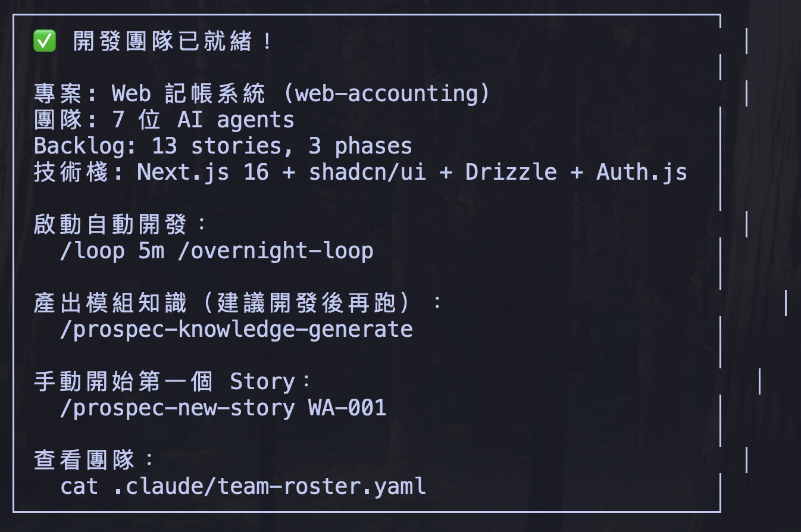
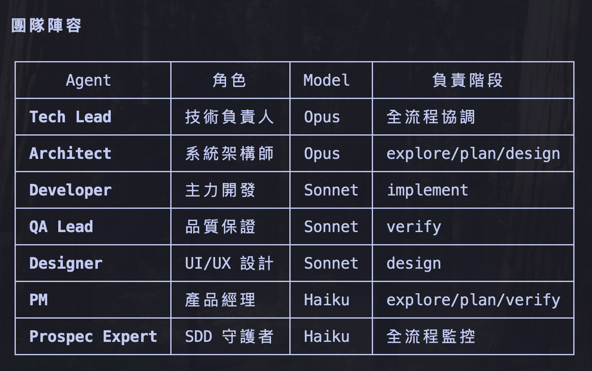
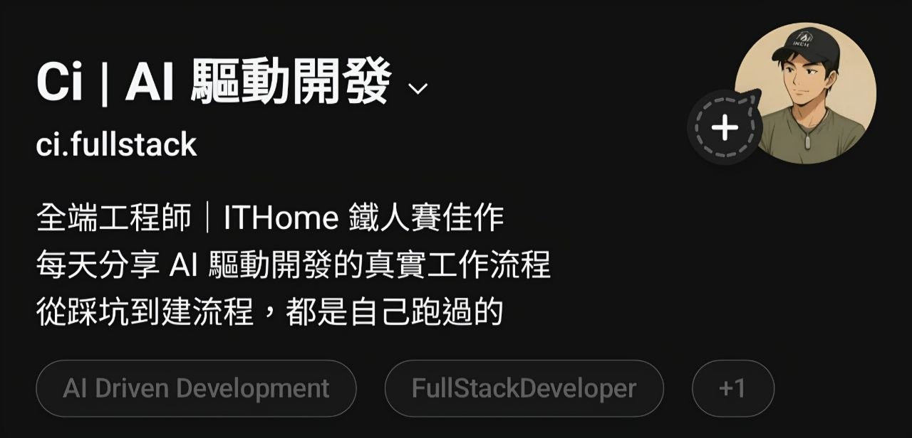

Lightning Talk — 3 min
Multi-Agent 開發
一個人 + 7 個 AI 同事
Ci | @ci.fullstack
2026-04-09 · Taipei Claude Code for Developers
1 / 10
我的困境
白天在公司
- Backend 工程師，每天寫 Python/FastAPI
- Sprint ticket 永遠做不完
- 想做 side project 但沒時間
→
晚上讓 AI 團隊幫忙
- 7 個 AI Agent 同時開發
- 我只要定義 Spec，它們執行
- 睡一覺起來，整個 App 就寫好了
怎麼做到的？Claude Code Agent Teams
2 / 10
Claude Code Feature
Agent Teams
多個 Claude Code 協作
- Team Lead 協調分工
- 每個 Agent 獨立 context
- Peer-to-peer 直接溝通
- Git worktree 隔離
自定義角色
- 放
.claude/agents/ - 每個指定 model + tools
- Opus 做架構，Sonnet 寫 code
- Haiku 做監控
不是 subagent — 是真正的多人協作
3 / 10
一鍵建團隊
/dev-team-creator "建一個記帳 App"
🤖
agents/
7 個角色定義
Tech Lead, Architect, Dev, QA, Designer, PM, SDD Expert
📜
CONSTITUTION.md
品質規範
Coding standards, review checklist
📋
backlog.md
任務清單
Stories + 優先序 + 驗收條件
4 / 10
Real Output
建完長這樣


Web 記帳系統 — 7 位 AI agents · 13 stories · 3 phases
5 / 10
/loop + SDD = 自動開發引擎
/loop — 定時驅動
/loop 5m /overnight-loop
每 5 分鐘自動觸發，Tech Lead 檢查 backlog → 派任 → 推進
SDD — Spec-Driven Development
通用規格驅動框架（spec-kit / OpenSpec）
explore
→
plan
→
design
→
tasks
→
implement
→
verify
→
archive
自動循環流程
1
/loop 觸發 → Tech Lead 讀 backlog
2
找到下一個未完成 Story
3
按 SDD 階段派任對應 Agent
4
完成 → 更新 backlog → 下一個
5
重複直到 backlog 全部完成
6 / 10
Full Flow

完整流程圖
開發者 → /dev-team-creator → agents + constitution + backlog → /loop → 自動交付
7 / 10
Real Results — RepoLens
一夜的產出
10
Stories 完成
25
Commits
53
TS Files
~2h
一夜完成
RepoLens — GitHub Repo 視覺化分析工具
React 19 + shadcn/ui + Tailwind · E2E Tests · Vercel 部署
8 / 10
Architecture

Orchestrator-Worker 模式
9 / 10

THREADS
@ci.fullstack
Ci | AI 驅動開發
每天分享 AI 驅動開發的真實工作流程
從踩坑到建流程，都是自己跑過的
完整投影片: jason-yang-vsx.github.io/ai-presentations
10 / 10